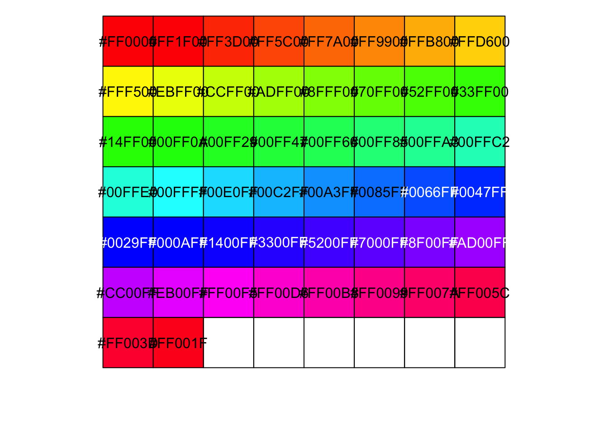
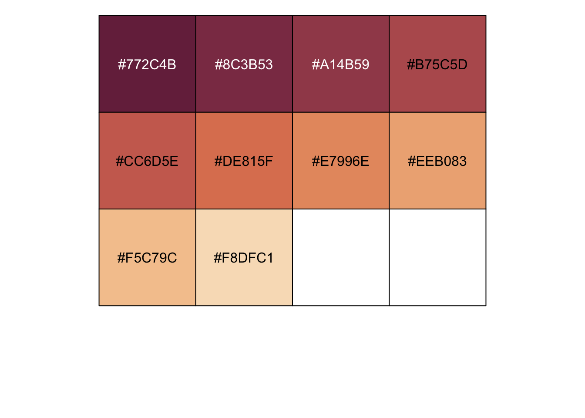

Statistical Software
I would like to acknowledge past and current colleagues who have enriched my knowledge of statistical software engineering

Pictured : Alma Mater, University of Zürich, (2023)
Fake holidays (excerpt)
- Last performed Dec 26, Berlin
I love the slowest days of the year
The ones between real holidays
Are real holidays
Magnifying my nothingness into lightness
The slowest of the days of the year
Are the kindest ...
Notes on columns and row binding and matrix multiplication
Let’s attempt to get the solution from below
knitr::include_graphics("images_lifesite/dotproduct.svg")
Pictured : Example of dot product from Toppr
first_matrix = matrix(c(1, 4, 2, 5, 3, 6), nrow = 2, ncol = 3)
second_matrix = matrix(c(7, 9, 11, 8, 10, 12), nrow = 3, ncol = 2)is_first0 = rbind(c(1, 2, 3), c(4, 5, 6)) # this is how you recreate a matrix
is_first1 = rbind(1, 2, 3, c(4, 5, 6))
print(is_first0)## [,1] [,2] [,3]
## [1,] 1 2 3
## [2,] 4 5 6print(is_first1)## [,1] [,2] [,3]
## [1,] 1 1 1
## [2,] 2 2 2
## [3,] 3 3 3
## [4,] 4 5 6identical(is_first0, first_matrix) # TRUE## [1] TRUEidentical(is_first1, first_matrix) # FALSE## [1] FALSEis_second = cbind(c(7, 9, 11), c(8, 10, 12))
identical(second_matrix, is_second) # TRUE## [1] TRUEThe first matrix looks like:
print(first_matrix)## [,1] [,2] [,3]
## [1,] 1 2 3
## [2,] 4 5 6The second matrix looks like:
print(second_matrix)## [,1] [,2]
## [1,] 7 8
## [2,] 9 10
## [3,] 11 12When we try to do first_matrix * second_matrix gives
Error in first_matrix * second_matrix : non-conformable arrays.
It is correct indeed to multiply two matrices that have the same column
of first_matrix, to the same row of second_matrix. In this case the
dimensions are 3 x 2 multiplied by 2 x 3 The resulting
matrix should be the row of first_matrix and the column of the second,
therefore 2 x 2.
The correct way to do it in R is:
first_matrix %*% second_matrix## [,1] [,2]
## [1,] 58 64
## [2,] 139 154Notes on choosing colours in R
colorBlindGrey8 <- c("#999999", "#E69F00", "#56B4E9", "#009E73",
"#F0E442", "#0072B2", "#D55E00", "#CC79A7")
scales::show_col(colorBlindGrey8)
# show colours
scales::show_col(rainbow(50))
# show HEX code
rainbow(22)## [1] "#FF0000" "#FF4600" "#FF8B00" "#FFD100" "#E8FF00" "#A2FF00" "#5DFF00"
## [8] "#17FF00" "#00FF2E" "#00FF74" "#00FFB9" "#00FFFF" "#00B9FF" "#0074FF"
## [15] "#002EFF" "#1700FF" "#5D00FF" "#A200FF" "#E800FF" "#FF00D1" "#FF008B"
## [22] "#FF0046"# how to View colours
vir <- hcl.colors(10, palette = "Pastel 1", alpha = NULL, rev = FALSE, fixup = TRUE)
vir <- hcl.colors(10, palette = "Cold", alpha = NULL, rev = FALSE, fixup = TRUE)
vir <- hcl.colors(10, palette = "ag_GrnYl", alpha = NULL, rev = FALSE, fixup = TRUE)
vir <- hcl.colors(10, palette = "Oslo", alpha = NULL, rev = FALSE, fixup = TRUE)
vir <- hcl.colors(10, palette = "BurgYl", alpha = NULL, rev = FALSE, fixup = TRUE)
# show colours
scales::show_col(vir)
# show HEX code
vir## [1] "#772C4B" "#8C3B53" "#A14B59" "#B75C5D" "#CC6D5E" "#DE815F" "#E7996E"
## [8] "#EEB083" "#F5C79C" "#F8DFC1"What am I currently working on ?
I am working on an early drug development software for study
statisticians and early development teams to evaluate probability of
success within the Bayesian framework. The context of this work is in
the oncology therapeutic area. This work will be presented in various
talks in 2024-5. We’re aiming to submit this to CRAN. I am passionate
about good engineering practices and am bringing this package, written
in R, to the state of art. I have a checklist that was requested to be
shared from the useR!2024 presentation “Software Engineering: A
Statistician’s Journey” which will be published here soon. Here is the
open source repository of phase1b
where I am the Lead developer of. What I enjoy about statistical
software development is to create mathematically elegant solutions such
that the solution is fit for purpose, and the facility is
computationally robust. It ties my interest in probability theory and
computer science together, along with my personal value of creating
accessible infrastructures.
What is a statistical software ?
Statistical software is a computing facility that provides a practical solution to statistical analyses. It can be written in one or more computing languages such as R, C++, Python, Julia or others. Usually the choice of language depends on the purpose of the statistical analyses, target user and performance.
Why would anybody be interested in statistical software ?
Statistical software have existed for decades. Good software produces results efficiently and reproducibly, both can attend to the scientific question and good scientific practices.
What is state of art engineering for statistical software ?
Mary Shaw, (2002) : “Acceptance of their results relies on the process of obtaining the results as well as analysis of the results themselves.”
A good software tends to the principles of good scientific practice and good engineering practices. This is not without a rigorous practice of testing code, reviewing code, writing clear and clean code and addressing the precise statistical question.
The rationale for good statistical engineering practices is first and foremost deliver a fit for purpose and robust facility that produces reproducible results. Clean and readable code that is properly formatted and styled allows more efficient reviewing, reading and opens more doors for collaboration. These practices contribute to the ultimate goal of the best product available for a statistical analysis need.
What are examples of good statistical software ?
Statistical software that have been widely accepted are generally published in CRAN, see pic below (The Comprehensive R Archive Network). Currently, there are over 20’000 packages on CRAN.
What is CRAN ?
CRAN hosts a central hub for information about R installation, R packages and documentation. “CRAN operations, most importantly hosting, checking, distributing, and archiving of R add-on packages for various platforms, crucially rely on technical, emotional, and financial support by the R community.” See more here.

References :
Got feedback ? Email me here
Famillie Yeo
- Audrey Yeo
These poems are like a revision of histories
Of yours, of mine, of somebody's
They are glimmers explained in cryptic themes
I pluck the root up to discover
My hands have moonshine before
And build poetry as home
For orphaned feelings
To find shelter